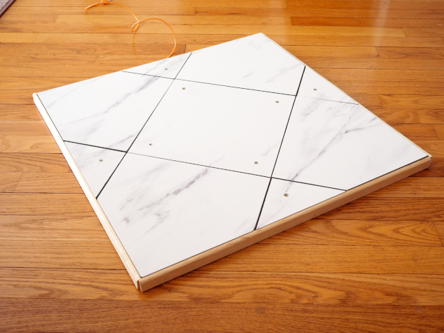

I'm making wooden "Dance Dance Revolution" pads over the coming months at a cheap price point. These are for people who want something nicer than a flexible foam pad, but aren't keen on shelling out $400+ for a hard pad.
The Pubby Pad is a cross between a full-sized pad and a mini travel pad. It's small enough to be cheap to manufacture and ship, but large enough to enable most playstyles. The buttons are roughly 80% the size of a real pad, meaning you can jump around without feeling too restricted.
The buttons use force sensitive resistors (FSRs) to detect steps, which are some of the highest quality sensors around. These sensors can be configured using software, meaning you don't have to open the pad up and insert pennies to adjust the sensitivity. You can have buttons that require a feather touch, or buttons that require a small stomp; it's up to you.
Engineered wood comprises the pad, with commercial-grade laminate flooring for the top surface. The nice thing about laminate flooring is that it's designed to be stepped on; it's smooth, hard, and very stiff, and should withstand even the heaviest players. In construction, the pad is similar to the Bandit Travel Pad, which is a sturdy and reliable low-cost design.
Windows, Linux, and Mac are all supported, and the pad comes with a long USB wire to connect it. The hardware identifies as a generic video game controller, so it should work out of the box.
For the first batch I'm aiming for a target price of $165 per pad, plus shipping. Shipping to the USA will use these rates. Shipping elsewhere will require a quote.
Pads will be available soon. If you would like to get on the waiting list, please e-mail the link below:
When the pads are manufactured, you'll receive an e-mail with purchasing information.
Software for changing the pad's sensitivity can be found on Github. You can also find the pad's firmware there.
{kind=link}